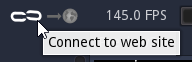

Sharing assets¶
Material Maker has a website where users can share their materials and brushes at the following address: https://www.materialmaker.org
Downloading materials¶
To import a material from the website, use the File -> Load material from website menu entry, and select a material from the list.

The Filter field can be used to filter materials using their name, description, or associated tags.
Downloading brushes¶
To import brushes from the website, just use the Get more brushes button in the top right corner of the Brushes panel (only available for painting projects). A load from website dialog will be shown with all available brushes, and selecting one will download it and set it as current brush. It can then be modified and saved into a library using the Tools -> Add current brush to library menu.
Downloading environments¶
Environments can be imported from the Environment Editor using the Download environment button at the bottom of the dialog.
Downloading custom nodes¶
To import nodes from the website, just use the Get more nodes button in the top right corner of the Library panel. A load from website dialog will be shown with all available brushes, and selecting one will download it and add it into the current graph (in the center of the graph view). It can then be modified and saved into a library using the Tools -> Add selected node to library menu.
Uploading assets to the website¶
Before uploading assets to the website, it is necessary to create an account and log in. Accounts are created on the website using the Register link. Please make sure you don’t use your email address as user name, since this name is visible from other users. The email address is optional and will only be used to recover your account.
To log in, use the connect button, enter your account name and password in the Login to website dialog and use the Log in button. The Register button can be used to open a web browser on the Register page of the website.
When logged in, it is possible to upload assets to the website:
The current material can be uploaded using the Send material to website next to the connect button
When the active project is a painting project, the current brush will be shared using the same button
Environments can be uploaded using the Upload environment button at the bottom of the Environment editor
Custom nodes can be shared using the Share node on website item of the context menu.
When uploading an asset, the Share asset dialog will be shown to select a name, a license, tags, and a description for the asset. For materials, brushes and environment, it is possible to update an existing asset or create a new one.

When uploading a custom node, the Share custom node dialog will be shown before the Share asset window, to verify that all requirements for sharing a node are met (the node must be documented as well as all its parameters, inputs and outputs).